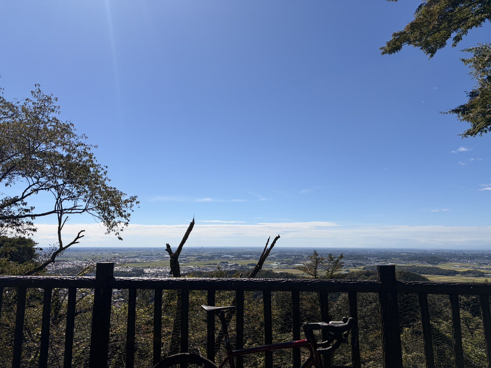
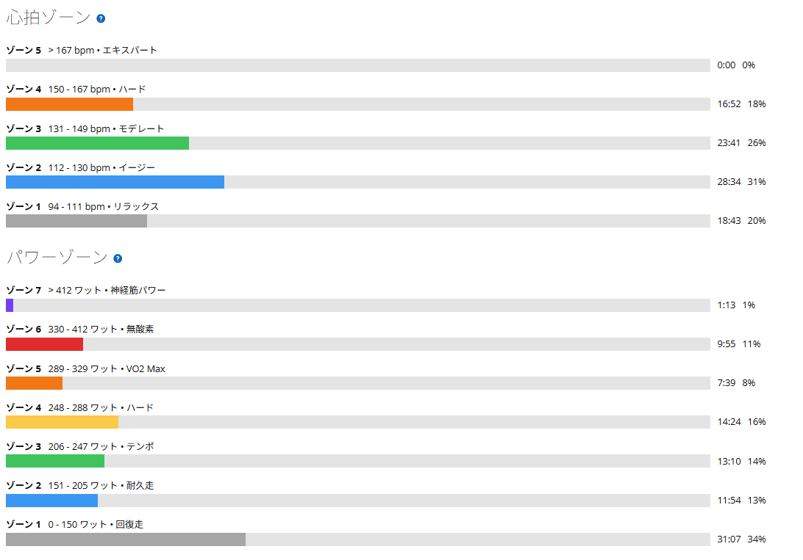
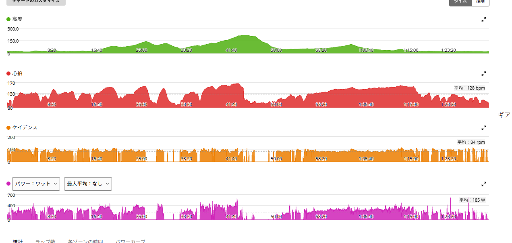

久しぶりの晴れ。太平山は31℃の中で6分56秒・325W
最近は雨の日が続いていて、なかなか外を走れなかった。今日は久しぶりにしっかり晴れ。せっかくなので太平山へ行ってきた。
空はかなり気持ちよく晴れていて、久々に外を走れるだけでもかなり気分が上がる。

晴れているのに路面はびちゃびちゃ
天気だけ見れば完全に晴れ。ただ、昨日の台風の影響が残っていて、一部の道路はかなり濡れていた。「今日は晴れたから自転車も汚れないだろう」と思っていたのだが、普通に泥水を拾った。
結果、自転車はしっかり汚れた。まあ、久しぶりに外を走れたので、それくらいは許すことにする。
40.75km・NP247W・TSS120.1
- 全体40.75km / 1時間29分28秒 / 獲得468m / 平均気温31.2℃
- 負荷平均185W / NP247W / IF0.900 / TSS120.1
- 心拍・回転平均128bpm / 最大167bpm / 平均84rpm
- 効果有酸素TE3.8 / 無酸素TE0.7 / 運動負荷164
全体としては、かなりしっかり負荷の入ったライドになった。パワーはゾーン5以上に18分47秒、心拍はゾーン4に16分52秒入っている。

太平山は6分56秒・325W
- 今日の太平山6分56.6秒 / 325W / NP334W / 心拍平均152bpm・最大167bpm / 89rpm
最近の太平山と、そのときの気温を並べるとこうなる。
- 9月14日6分45秒 / 340W / 気温27℃台
- 9月18日6分49秒 / 333W / 平均気温20.1℃
- 今日6分56秒 / 325W / 平均気温31.2℃（太平山区間でも29℃前後）
タイムとパワーは少し落ちている。ただ、今日はかなり暑い中での走行だった。この条件で7分を切れているなら、内容としては悪くないと思う。これまでの太平山の中でも3番目に速いタイムである。
心拍はしっかり上がった
少し前のローラーでは「同じくらいの出力なのに、なぜか心拍が上がらない」という状態があった。疲労なのか、ペダリングが良くなったのか、気温や環境の影響なのか。その後も様子を見ていたが、今日は最大心拍167bpm。太平山区間でも平均152bpm、最大167bpmまで普通に上がっている。
少なくとも「心拍そのものが上がらなくなっている」という感じではなさそうだ。むしろ今日は暑さの影響もあって、心拍負荷はかなり高めだった。太平山の心拍は9月14日（340W）とまったく同じ平均152・最大167で、出力は15W低い。暑い日は同じ心拍でも出せるパワーが下がる、ということなのだろう。
太平山の後も踏めた
- 後半の区間17分05秒 / 平均273W
今日は太平山を一本登って終わりではない。太平山で高強度を入れたあとでも、その後に長めの時間をしっかり踏めている。全体NP247W、IF0.900、TSS120.1。タイム更新の日ではなかったが、ライド全体としてはかなり密度のある内容になった。

久しぶりに外を走るだけで気持ちいい
今日は数字もそれなりに出た。でも、それ以上に印象に残ったのは「やっぱり外を走るのは気持ちいい」ということだった。
最近は雨が続いていて、ローラー中心。もちろんローラーは効率よくトレーニングできる。でも、青空の下で景色を見ながら走る感覚は別物である。道路は一部びちゃびちゃで、自転車は汚れた。それでも、今日は外に出て正解だった。
今日やってみて思ったこと
太平山のタイムだけを見ると、「前回より遅かった」で終わる。でも今日はかなり暑く、全体としてもTSS120.1。その中で7分切り、さらに後半17分・273W。最近少し気になっていた心拍も、167bpmまで普通に上がった。
なので今日は、「自己ベスト更新の日ではないけど、暑い中でしっかり負荷を積めた良い実走」という評価でいいと思う。そして何より、久しぶりの晴れ、久しぶりの外ライド。それだけでかなり気持ちよかった。
次に見るポイント
- 太平山325〜340W前後を、どのくらい安定して出せるか
- 気温涼しい日に同じ出力で、どれくらいタイムが変わるか
- 高強度のあと長めの持続走をどこまで維持できるか
- ローラー315W×5分×5本に再挑戦する
今日は自転車が汚れたので、まず洗車からである。